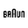

Ulike position
声量已经有了，但购买证据还没形成防守墙。
Ulike 不是被一个品牌单点压制，而是被不同竞品从安全、价格、权威和搜索比较四个方向分流。
核心任务：把 creator 内容拆成 safety / value / authority / comparison proof。
Ulike 已经进入 KOL 增长优化期。公开信号显示，它已有 affiliate、sponsored creator、PR review、Amazon/官网联动和专家背书动作；当前更关键的问题，是这些信任资产尚未被系统转译成购买决策证据链。
Ulike 下一阶段要修复购买证据链缺口：把已有产品卖点、专家背书、PCOS 场景和 creator 内容，组织成能回答用户购买顾虑的购买证据系统。
本节承接证据判断：解释为什么“继续加人”不是主策略，以及下一步应该审计哪些内容资产。
统计窗口：2026-05-15 至 2026-06-14。已核验 301 条 creator / review publishes；这个数字的业务含义是：Ulike 当前要优化的不是继续扩大红人发布量，而是判断哪些平台内容负责成交、哪些负责信任、哪些只是短期曝光。
业务解读：Ulike 不是缺声量，而是平台分工需要重排。 Instagram 贡献最高，说明关系和素材层已经很活跃；TikTok 承接转化测试；YouTube 只有 18%，但它最接近购买前 review、comparison 和搜索信任，不能只用数量评估价值。
阅读顺序是：先确认声量是否过线，再判断平台角色是否混在一起，最后用合作样本和品牌信任资产判断哪些内容值得复投。
近 30 天已核验公开视频。
近 30 天已经有足够样本，不应再把“新增红人数量”当主目标。
判断哪些内容解释了购买顾虑，哪些只制造短期曝光。
Instagram、TikTok、YouTube 分布不同。
Instagram 更像素材与关系层，TikTok 更像转化测试层，YouTube 更像购买前信任层。
Instagram 看素材复用，TikTok 看购买意图，YouTube 看搜索信任。
可见 sponsored / affiliate 合作信号。
问题不是重新从零找红人，而是从现有样本里筛出有效内容类型。
把 creator 分成值得复投、只适合剪素材、应停止合作三类。
销量 claim 与 Amazon ratings 已存在。
品牌已有卖点和背书，缺的是 creator 内容把这些信任资产翻译给用户。
让 creator 内容承接销量 claim、Amazon ratings、专家背书和真实使用边界。
问题不是要不要继续做 KOL，而是不能再把“大号 + 折扣码 + 一次性曝光”当成增长答案。下一步必须按购买证据价值重排内容。
Ulike 面临的不是一个竞品，而是四类不同的内容战场：安全权威、低价试错、高端科技信任和比较搜索截流。不同竞品抢的是不同购买顾虑，Ulike 的防守要拆成 safety proof、value proof、authority proof 和 comparison proof。
Ulike 不是被一个品牌单点压制，而是被不同竞品从安全、价格、权威和搜索比较四个方向分流。

Braun → safety pressure当用户担心安全、肤色适配和长期效果时，Braun 更容易成为“稳妥选择”。
Nood 会把用户带进“先试试看、便宜一点”的语境，压低 Ulike 的价值感。
CurrentBody 抢的是愿意为 beauty tech 付高价的人群和设备权威感。

这些品牌会一起占住 “best IPL device”“Ulike alternative” 这类高意图搜索。
YouTube 补信任，TikTok 筛 winner，Instagram 买可复用素材。预算按购买链条分工，不按平台平均撒。
先不要追加“更多红人”预算。先把现有内容分成三笔钱：补信任的钱、筛 winner 的钱、买可复用素材的钱。
Ulike 是高客单 IPL，用户买前一定会搜 review、Ulike vs Braun、适合肤色、痛不痛、PCOS 能不能用。这个位置没人守，前面的短视频声量会被浪费。
TikTok 可以继续跑，但不能把“视频上线”当结果。它的任务是筛出哪些痛点、场景和表达真的能让用户问价格、问链接、问自己适不适合。
Instagram 的价值不是单独成交，而是把 creator 内容变成广告、落地页、邮件、Amazon 页面都能复用的可信视觉资产。
Ulike 当前需要一组能覆盖购买顾虑的 creator archetype，而不是随机红人名单。具体账号应按内容证据能力、受众地区、披露质量、评论区购买意图和素材复用价值筛选。
解释 IPL 适合谁、不适合谁、为什么需要坚持、怎么避免使用风险。
记录 stubborn facial/body hair 的真实使用旅程，比普通 beauty haul 更有情绪穿透力。
拦截 Ulike vs Braun / Nood / CurrentBody 这类高意图搜索和购买决策内容。
after-shower routine、summer prep、vacation prep、gym confidence routine。
覆盖美国多语言人群中的 hair removal routine、PCOS/hormonal hair、body confidence。
服务 Ulike X、chest/back/underarm grooming、athlete/gym routine 等男性场景。
Ulike 已经有 Air 10、冰感冷却、SkinSensor、PCOS 场景和专家背书；真正影响购买的是，这些 claims 是否被拆成用户能看懂、能相信、能比较的过程证据。
Scoring basis: 评级基于公开官网资产、Amazon/媒体信号、YouTube 搜索样本、可见 creator 内容类型和竞品内容语境。Strong 表示品牌侧资产清晰；Gap 表示 creator proof 或搜索拦截承接不足；Unknown 表示需要后台或平台级 crawl 验证。
当前诊断已经确定 Ulike 的 KOL 问题属于增长优化和防守阶段。完整分析会把平台内容、竞品动作和 creator 质量拆到可执行层。
已识别 3 个竞品拦截语境：Braun 抢 safety authority，Nood 抢 price/value conversion，CurrentBody 抢 beauty tech credibility。完整分析将量化这些语境对应的 creator、keyword、hook 和评论区购买意图。
完整分析不会只补账号名单，而是区分 proof creator、sales creator、content-only creator 和 risk creator，判断谁值得 rebook、谁只适合拿素材、谁会稀释信任。
公开样本已经出现 doctor-style review、1-year update、brown skin、men's grooming 和 comparison。完整分析将拆出哪些关键词已有 Ulike 露出，哪些仍被竞品和中立 reviewer 占据。
已识别需要补强的内容证据：长期追踪、pain test、skin/hair compatibility、PCOS journey、comparison review。完整分析会把内容样本、hook、评论区信号和可复用 brief 串成执行资产。
Ulike 不应平均对待所有红人。接下来要判断哪些 creator 值得 rebook，哪些内容值得变成 paid social、landing page、Amazon asset 和 email 素材。
按 platform、creator archetype、audience geography、content angle、discount-code dependence、proof strength、comments with purchase intent 重分现有内容。
不再只发产品介绍 brief，而是按 2-week diary、8-week honest update、pain comparison、PCOS routine、mistakes tutorial 发 brief。
优先找 YouTube creator 产出 long-tail review 和 comparison，承接高意图搜索。
用评论质量、解释能力、持续更新、素材可复用性、audience fit 决定 rebook 和 paid boost。
更合理的方向是：中腰部购买证据矩阵、YouTube high-intent review、TikTok series testing、PCOS/stubborn hair/safety education、winner rebook 和 paid boost。
公开资料能看到 affiliate、referral、Amazon/官网销售和 creator coupon code 信号；但 creator cohort analysis、post-live tracking、usage rights 和 rebook rules 需要后台数据确认。
GMV、毛利、CAC、ROAS、creator 合同、Amazon Attribution、TikTok Shop、Meta Ads 或 Shopify 数据均未纳入。Modash 的 54 creators 仅代表其公开页面在 2025-08-22 更新时列出的 Ulike sponsored creator sample，页面未披露 exact lookback window，不能作为全网红人内容数量。完整 TideLens 分析应结合 YouTube / TikTok / Instagram 平台级 crawl、后台数据与人工复核。
Methodology note: 本页为公开资料诊断，尚未纳入品牌后台、平台 API、creator 合同、实际投放预算或销售归因数据；具体账号名单、预算场景和 90 天执行路径需要进一步平台级采集与人工复核。